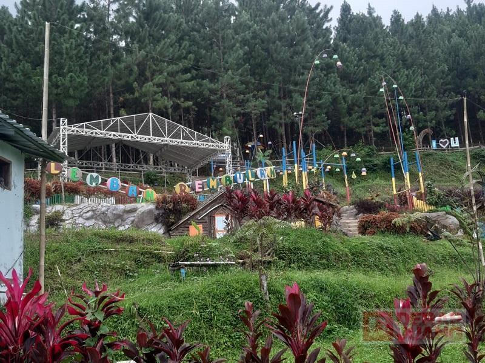
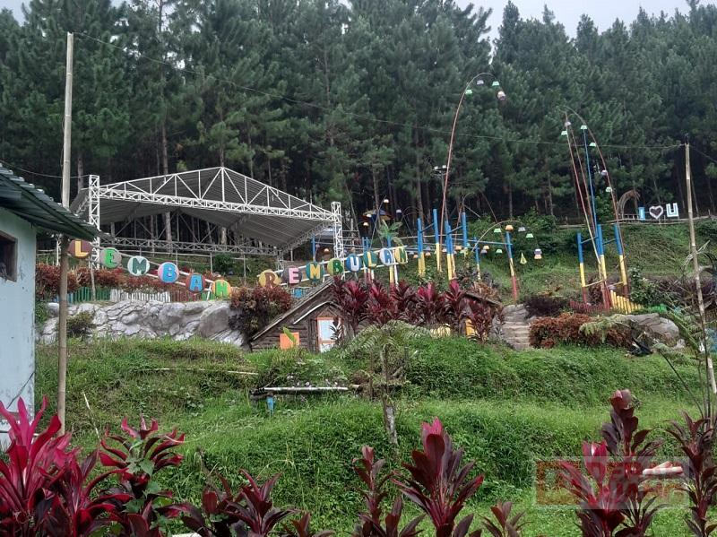

Wisata Lembah Rembulan merupakan wisata alam pegunungan asri dibawah lereng Gunung Slamet. Wisata ini menyajikan pemandangan alam yang indah dan jauh dari keramaian. Sehingga cocok sekali untuk dijadikan sebagai tempat liburan dan menenangkan pikiran. Berbagai aktivitas bisa dilakukan pengunjung seperti bersantai, berenang, berburu spot foto, camping, dan aktivitas seru lainnya. Wisata Lembah Rembulan juga menyediakan fasilitas berupa penginapan yang nyaman untuk pengunjung yang mau bermalam disini.
Berawal dari Program Pemerintah melalui Kementerian Desa, Pembangunan Daerah Tertinggal dan Transmigrasi (Kemendes PDTT) berkomitmen untuk menghilangkan citra desa yang tertinggal, kumuh, dan dihuni penduduk berpenghasilan rendah atau miskin. Oleh karena itu, ada empat program prioritas yang digenjot. Salah satunya adalah pembangunan embung yang kemudian dicantumkan oleh pemerintah Desa Rembul yang disusun dalam RKPDes pada tahun anggaran 2019. Selain itu juga dibangun Sarana Wisata yang ternyata memiliki potensi luar biasa yang akhirnya menjadi cikal bakal terbentuknya Lembah Rembulan